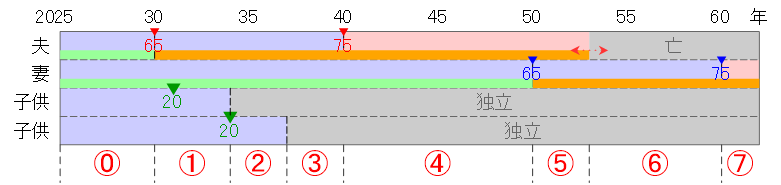

税金（長寿）
妻65歳（年金受給開始）以降に夫が亡くなる場合の税金を整理する。税金は、所得税・住民税・国民健康保険料・介護保険料・後期高齢者保険料の5つ。
2025年以降の所得に応じた税金を以下の前提で整理する。
- 夫と妻は無職。
- 妻は40歳以上。
- 子供は23年になる年の4月に就職し、経済（つまり年金や健康保険）的に独立する。
- 夫は65歳の公的年金受給開始までは生存する。
- 夫は60～65歳の間「退職年金」を受け取る。
- 夫と妻の公的年金受給開始は65歳。公的年金を参照。
- 現時点で不確定な貯金の利子と株式配当は考慮しない。利子所得と配当所得は所得の一部で税金額に影響するが、これに関わる（収入―税金）は＋であり、＋分を無視しても実害はない。
税金の計算に必要となる規定値
税金の計算に必要となる規定値は改定される可能性があるため、改定されたら計算し直す必要がある。
規定値ファイルを[ファイルの選択]ボタンから指定または上の領域にドラッグ＆ドロップしてください。
規定値リストを上の領域にコピー＆ペーストまたは直接入力することもできます。
作成した規定値リストをダウンロードできます。 →
規定値リストを上の領域にコピー＆ペーストまたは直接入力することもできます。
作成した規定値リストをダウンロードできます。 →
強調値は改定される可能性がある値
（初期値は2024年の規定値）
税金の計算に必要となる公的年金額
税金の計算には公的年金で算出した公的年金額（納付額と受給額）が必要。 公的年金額を算出しなおしたら、公的年金でダウンロードした公的年金額データを読み込み、 税金を計算し直す必要がある。
公的年金額データファイルを[ファイルの選択]ボタンから指定または上の領域にドラッグ＆ドロップしてください。
公的年金額データ値リストを上の領域にコピー＆ペーストまたは直接入力することもできます。
公的年金額データ値リストを上の領域にコピー＆ペーストまたは直接入力することもできます。
公的年金額（初期値は2024年の計算値）
所得
所得に応じて税金額が変わるため、まず所得を算出する必要がある。 所得には、利子所得・配当所得・不動産所得・事業所得・給与所得・退職所得・山林所得・譲渡所得・一時所得・雑所得があるが、 2025年以降に税金額に影響する収入があるのは、雑所得である（利子所得と配当所得は無視する）。 所得 ＝ 雑所得。雑所得の計算方法
- 雑所得は利子所得・配当所得・不動産所得・事業所得・給与所得・退職所得・山林所得・譲渡所得・一時所得ではない所得。公的年金、生命保険年金など。
- 雑所得のうち「公的年金等の雑所得」については、公的年金等控除が適用される（収入が一定以下なら非課税になる枠がある）。
- 公的年金等の雑所得は、課税年金額 ー 公的年金等控除額。それ以外の雑所得は、収入金額 ー 必要経費。
- 遺族年金は非課税のため、課税年金額に含めない。
- 夫が受給するすべての年金は課税対象のため、課税年金額＝受給年金額。
- 公的年金等控除額（「公的年金等の雑所得」以外の所得が1000万円以下の場合）は以下。
- 年金受取人が65歳未満で公的年金等の収入金額が130万円以下は、控除額円。
- 年金受取人が65歳未満で公的年金等の収入金額が410万円以下は、公的年金等収入金額 × 0.25 ＋ 控除額定額分円。
- 年金受取人が65歳以上で公的年金等の収入金額が330万円以下は、控除額円。
- 年金受取人が65歳以上で公的年金等の収入金額が410万円未満は、公的年金等収入金額 × 0.25 ＋ 控除額定額分円。
- 65歳以上かどうかは課税年度の1月1日時点の年齢で判定する。
- 例えば、2031年1月1日に65歳ならば、2031年課税額を2030年収入に基づいて65歳以上として算出する。
- 収入年の翌年1月1月の年齢に基づいて所得を算出することで翌年の課税額が決まる、とも言える。
所得の算出
- 2025年の夫雑所得は円 （夫課税年金額 － 公的年金等控除額）。
- 2026～2029年の夫雑所得は円 （夫課税年金額 － 公的年金等控除額）。
- 2030年（夫65歳）の夫雑所得は円 （夫課税年金額> － 公的年金等控除額）。
- 2031～2032年の雑所得は円 （夫課税年金額 － 公的年金等控除額）。
- 2033年（第2子高校卒業）の夫雑所得は円 （夫課税年金額 － 公的年金等控除額）。
- 2034～2049年の夫雑所得は円 （夫課税年金額 － 公的年金等控除額）。
- 2050年（妻65歳）の夫雑所得は円 （夫課税年金額 － 公的年金等控除額）。
- 2050年（妻65歳）の妻雑所得は円 （妻課税年金額 － 公的年金等控除額）。
- 2051年以降の夫雑所得は円 （夫課税年金額 － 公的年金等控除額）。
- 2051年以降の妻雑所得は円 （妻課税年金額 － 公的年金等控除額）。
国民健康保険料
- 国民健康保険（＝国民健康保険料）は0歳以上75歳未満の人が加入する。ただし会社員は国民健康保険ではなく企業の健康保険に加入する。
- 75歳になったら国民健康保険から後期高齢者医療制度に自動的に移行する。
- 国民健康保険税は世帯単位で課税され、世帯主が届出や保険料納付の義務を負っている。 夫生存中は夫が納付し、夫死亡後は妻が納付すれば良い。
- 国民健康保険税には扶養の概念はないため子供の保険料も支払う必要があるが、子供が就職して会社員になったら企業の健康保険に加入する。 企業の健康保険に加入したら国民健康保険を脱退する手続きを行う必要がある。
計算方法
国民健康保険税は、医療分・支援分・介護分ごとの所得割額＋均等割額を合算した値（課税限度額が上限）が年税額となる。- 年税額 = 医療分（所得割額＋均等割額）＋ 支援分（所得割額＋均等割額）＋ 介護分（所得割額＋均等割額）。
- 医療分・支援分・介護分はそれぞれ100円未満切り捨て。
- 介護分は40歳以上誕生月から発生し、65歳以上は無し（65歳以上は国民健康保険税とは別に介護保険料を納付）。
- 所得割額 = 世帯該当者全員の課税標準所得額 × 所得割。
- 均等割額 = 世帯該当者人数 × 均等割。
- 介護分については、40～60歳以外は該当者に含めない。
- さいたま市の医療分所得割は％、医療分均等割は円、医療分限度額円。
- さいたま市の支援分所得割は％、支援分均等割は円、支援分限度額円。
- さいたま市の介護分所得割は％、介護分均等割は円、介護分限度額円。
- 課税標準所得額 = 前年総所得金額 － （国民健康保険）基礎控除額円。
国民健康保険税の算出
- 2026～2029年⓪
- 
※ 国民健康保険税はと（介護分）。- 2025年夫課税標準所得は円 （夫所得 － 基礎控除）。
- 2026～2029年の夫課税標準所得は円 （夫所得 － 基礎控除）。
- 2026～2029年の世帯課税標準所得は円（夫課税標準所得）
- 医療分所得割額円 = 世帯課税標準所得円 × 所得割％。
- 医療分均等割額円 = 世帯加入者人数4 × 均等割円。
- 医療分円 = 医療分所得割額円 ＋ 医療分均等割額円 （100円未満切り捨て、限度額円が上限）
- 支援分所得割額円 = 世帯課税標準所得円 × 所得割％。
- 支援分均等割額円 = 世帯加入者人数4 × 均等割円。
- 支援分円 = 支援分所得割額円 ＋ 支援分均等割額円 （100円未満切り捨て、限度額円が上限）
- 介護分所得割額円 = 世帯40～65歳加入者課税標準所得円 × 所得割％。
- 介護分均等割額円 = 世帯40～65歳加入者人数2 × 均等割円。
- 介護分円 = 介護分所得割額円 ＋ 介護分均等割額円 （100円未満切り捨て、限度額円が上限）
- 国民健康保険税額は円 （医療分 ＋ 支援分 ＋ 介護分）。
- 2025年夫課税標準所得は円 （夫所得 － 基礎控除）。
- 2030年（夫65歳）⓪と①の堺
※ 国民健康保険税はと（介護分）。- 2026～2029年夫課税標準所得は円 （夫所得 － 基礎控除）。
- 2026～2029年の世帯課税標準所得は円（夫課税標準所得）
- 夫の介護分は2月分まで納付するため、世帯40～65歳加入者人数を1.17（1＋2/12）とする。
- 医療分所得割額円 = 世帯課税標準所得円 × 所得割％。
- 医療分均等割額円 = 世帯加入者人数4 × 均等割円。
- 医療分円 = 医療分所得割額円 ＋ 医療分均等割額円 （100円未満切り捨て、限度額円が上限）
- 支援分所得割額円 = 世帯課税標準所得円 × 所得割％。
- 支援分均等割額円 = 世帯加入者人数4 × 均等割円。
- 支援分円 = 支援分所得割額円 ＋ 支援分均等割額円 （100円未満切り捨て、限度額円が上限）
- 介護分所得割額円 = 世帯40～65歳加入者課税標準所得円 × 所得割％。
- 介護分均等割額円 = 世帯40～65歳加入者人数1.17 × 均等割円。
- 介護分円 = 介護分所得割額円 ＋ 介護分均等割額円 （100円未満切り捨て、限度額円が上限）
- 国民健康保険税額は円 （医療分 ＋ 支援分 ＋ 介護分）。
- 2026～2029年夫課税標準所得は円 （夫所得 － 基礎控除）。
- 2031年①
※ 国民健康保険税はと（介護分）。- 2030年の夫課税標準所得は円 （夫所得 － 基礎控除）。
- 2030年の世帯課税標準所得は円（夫課税標準所得）
- 医療分所得割額円 = 世帯課税標準所得円 × 所得割％。
- 医療分均等割額円 = 世帯加入者人数4 × 均等割円。
- 医療分円 = 医療分所得割額円 ＋ 医療分均等割額円 （100円未満切り捨て、限度額円が上限）
- 支援分所得割額円 = 世帯課税標準所得円 × 所得割％。
- 支援分均等割額円 = 世帯加入者人数4 × 均等割円。
- 支援分円 = 支援分所得割額円 ＋ 支援分均等割額円 （100円未満切り捨て、限度額円が上限）
- 介護分所得割額円 = 世帯40～65歳加入者課税標準所得円 × 所得割％。
- 介護分均等割額円 = 世帯40～65歳加入者人数1 × 均等割円。
- 介護分円 = 介護分所得割額円 ＋ 介護分均等割額円 （100円未満切り捨て、限度額円が上限）
- 国民健康保険税額は円 （医療分 ＋ 支援分 ＋ 介護分）。
- 2030年の夫課税標準所得は円 （夫所得 － 基礎控除）。
- 2032～2033年①
※ 国民健康保険税はと（介護分）。- 2031～2032年の夫課税標準所得は円 （夫所得 － 基礎控除）。
- 2031～2032年の世帯課税標準所得は円（夫課税標準所得）
- 医療分所得割額円 = 世帯課税標準所得円 × 所得割％。
- 医療分均等割額円 = 世帯加入者人数4 × 均等割円。
- 医療分円 = 医療分所得割額円 ＋ 医療分均等割額円 （100円未満切り捨て、限度額円が上限）
- 支援分所得割額円 = 世帯課税標準所得円 × 所得割％。
- 支援分均等割額円 = 世帯加入者人数4 × 均等割円。
- 支援分円 = 支援分所得割額円 ＋ 支援分均等割額円 （100円未満切り捨て、限度額円が上限）
- 介護分所得割額円 = 世帯40～65歳加入者課税標準所得円 × 所得割％。
- 介護分均等割額円 = 世帯40～65歳加入者人数1 × 均等割円。
- 介護分円 = 介護分所得割額円 ＋ 介護分均等割額円 （100円未満切り捨て、限度額円が上限）
- 国民健康保険税額は円 （医療分 ＋ 支援分 ＋ 介護分）。
- 2031～2032年の夫課税標準所得は円 （夫所得 － 基礎控除）。
- 2034年（第1子独立）①と②の堺
※ 国民健康保険税はと（介護分）。- 2033年の夫課税標準所得は円 （夫所得 － 基礎控除）。
- 2033年の世帯課税標準所得は円（夫課税標準所得）
- 世帯加入者人数が4月に4人から3人になるため、世帯加入者人数を3.25（3＋3/12）として計算する。
- 医療分所得割額円 = 世帯課税標準所得円 × 所得割％。
- 医療分均等割額円 = 世帯加入者人数3.25 × 均等割円。
- 医療分円 = 医療分所得割額円 ＋ 医療分均等割額円 （100円未満切り捨て、限度額円が上限）
- 支援分所得割額円 = 世帯課税標準所得円 × 所得割％。
- 支援分均等割額円 = 世帯加入者人数3.25 × 均等割円。
- 支援分円 = 支援分所得割額円 ＋ 支援分均等割額円 （100円未満切り捨て、限度額円が上限）
- 介護分所得割額円 = 世帯40～65歳加入者課税標準所得円 × 所得割％。
- 介護分均等割額円 = 世帯40～65歳加入者人数1 × 均等割円。
- 介護分円 = 介護分所得割額円 ＋ 介護分均等割額円 （100円未満切り捨て、限度額円が上限）
- 国民健康保険税額は円 （医療分 ＋ 支援分 ＋ 介護分）。
- 2033年の夫課税標準所得は円 （夫所得 － 基礎控除）。
- 2035～2036年②
※ 国民健康保険税はと（介護分）。- 2034～2049年の夫課税標準所得は円 （夫所得 － 基礎控除）。
- 2034～2049年の世帯課税標準所得は円（夫課税標準所得）
- 医療分所得割額円 = 世帯課税標準所得円 × 所得割％。
- 医療分均等割額円 = 世帯加入者人数3 × 均等割円。
- 医療分円 = 医療分所得割額円 ＋ 医療分均等割額円 （100円未満切り捨て、限度額円が上限）
- 支援分所得割額円 = 世帯課税標準所得円 × 所得割％。
- 支援分均等割額円 = 世帯加入者人数3 × 均等割円。
- 支援分円 = 支援分所得割額円 ＋ 支援分均等割額円 （100円未満切り捨て、限度額円が上限）
- 介護分所得割額円 = 世帯35～65歳加入者課税標準所得円 × 所得割％。
- 介護分均等割額円 = 世帯35～65歳加入者人数1 × 均等割円。
- 介護分円 = 介護分所得割額円 ＋ 介護分均等割額円 （100円未満切り捨て、限度額円が上限）
- 国民健康保険税額は円 （医療分 ＋ 支援分 ＋ 介護分）。
- 2034～2049年の夫課税標準所得は円 （夫所得 － 基礎控除）。
- 2037年（第2子独立）②と③の堺
※ 国民健康保険税はと（介護分）。- 2034～2049年の夫課税標準所得は円 （夫所得 － 基礎控除）。
- 2034～2049年の世帯課税標準所得は円（夫課税標準所得）
- 世帯加入者人数が4月に3人から2人になるため、世帯加入者人数を2.25（2＋3/12）として計算する。
- 医療分所得割額円 = 世帯課税標準所得円 × 所得割％。
- 医療分均等割額円 = 世帯加入者人数2.25 × 均等割円。
- 医療分円 = 医療分所得割額円 ＋ 医療分均等割額円 （100円未満切り捨て、限度額円が上限）
- 支援分所得割額円 = 世帯課税標準所得円 × 所得割％。
- 支援分均等割額円 = 世帯加入者人数2.25 × 均等割円。
- 支援分円 = 支援分所得割額円 ＋ 支援分均等割額円 （100円未満切り捨て、限度額円が上限）
- 介護分所得割額円 = 世帯37～65歳加入者課税標準所得円 × 所得割％。
- 介護分均等割額円 = 世帯37～65歳加入者人数1 × 均等割円。
- 介護分円 = 介護分所得割額円 ＋ 介護分均等割額円 （100円未満切り捨て、限度額円が上限）
- 国民健康保険税額は円 （医療分 ＋ 支援分 ＋ 介護分）。
- 2034～2049年の夫課税標準所得は円 （夫所得 － 基礎控除）。
- 2038～2039年③
※ 国民健康保険税はと（介護分）。- 2034～2049年の夫課税標準所得は円 （夫所得 － 基礎控除）。
- 2034～2049年の世帯課税標準所得は円（夫課税標準所得）
- 医療分所得割額円 = 世帯課税標準所得円 × 所得割％。
- 医療分均等割額円 = 世帯加入者人数2 × 均等割円。
- 医療分円 = 医療分所得割額円 ＋ 医療分均等割額円 （100円未満切り捨て、限度額円が上限）
- 支援分所得割額円 = 世帯課税標準所得円 × 所得割％。
- 支援分均等割額円 = 世帯加入者人数2 × 均等割円。
- 支援分円 = 支援分所得割額円 ＋ 支援分均等割額円 （100円未満切り捨て、限度額円が上限）
- 介護分所得割額円 = 世帯38～65歳加入者課税標準所得円 × 所得割％。
- 介護分均等割額円 = 世帯38～65歳加入者人数1 × 均等割円。
- 介護分円 = 介護分所得割額円 ＋ 介護分均等割額円 （100円未満切り捨て、限度額円が上限）
- 国民健康保険税額は円 （医療分 ＋ 支援分 ＋ 介護分）。
- 2034～2049年の夫課税標準所得は円 （夫所得 － 基礎控除）。
- 2040年（夫75歳）③と④の堺
※ 国民健康保険税はと（介護分）。- 2034～2049年の夫課税標準所得は円 （夫所得 － 基礎控除）。
- 2034～2049年の世帯課税標準所得は円（夫課税標準所得）
- 世帯加入者人数が3月に2人から1人になるため、世帯加入者人数を1.17（1＋2/12）として計算する。
- 医療分所得割額円 = 世帯課税標準所得円 × 所得割％。
- 医療分均等割額円 = 世帯加入者人数1.17 × 均等割円。
- 医療分円 = 医療分所得割額円 ＋ 医療分均等割額円 （100円未満切り捨て、限度額円が上限）
- 支援分所得割額円 = 世帯課税標準所得円 × 所得割％。
- 支援分均等割額円 = 世帯加入者人数1.17 × 均等割円。
- 支援分円 = 支援分所得割額円 ＋ 支援分均等割額円 （100円未満切り捨て、限度額円が上限）
- 介護分所得割額円 = 世帯40～65歳加入者課税標準所得円 × 所得割％。
- 介護分均等割額円 = 世帯40～65歳加入者人数1 × 均等割円。
- 介護分円 = 介護分所得割額円 ＋ 介護分均等割額円 （100円未満切り捨て、限度額円が上限）
- 国民健康保険税額は円 （医療分 ＋ 支援分 ＋ 介護分）。
- 2034～2049年の夫課税標準所得は円 （夫所得 － 基礎控除）。
- 2041～2049年④
※ 国民健康保険税はと（介護分）。- 2034～2049年の夫課税標準所得は円 （夫所得 － 基礎控除）。
- 2034～2049年の世帯課税標準所得は円（夫課税標準所得）
- 医療分所得割額円 = 世帯課税標準所得円 × 所得割％。
- 医療分均等割額円 = 世帯加入者人数1 × 均等割円。
- 医療分円 = 医療分所得割額円 ＋ 医療分均等割額円 （100円未満切り捨て、限度額円が上限）
- 支援分所得割額円 = 世帯課税標準所得円 × 所得割％。
- 支援分均等割額円 = 世帯加入者人数1 × 均等割円。
- 支援分円 = 支援分所得割額円 ＋ 支援分均等割額円 （100円未満切り捨て、限度額円が上限）
- 介護分所得割額円 = 世帯40～65歳加入者課税標準所得円 × 所得割％。
- 介護分均等割額円 = 世帯40～65歳加入者人数1 × 均等割円。
- 介護分円 = 介護分所得割額円 ＋ 介護分均等割額円 （100円未満切り捨て、限度額円が上限）
- 国民健康保険税額は円 （医療分 ＋ 支援分 ＋ 介護分）。
- 2034～2049年の夫課税標準所得は円 （夫所得 － 基礎控除）。
- 2050年（妻65歳）④と⑤の堺
※ 国民健康保険税はと（介護分）。- 2034～2049年の夫課税標準所得は円 （夫所得 － 基礎控除）。
- 2034～2049年の世帯課税標準所得は円（夫課税標準所得）
- 妻の介護分は10月分まで納付するため、世帯40～65歳加入者人数を0.83（10/12）とする。
- 医療分所得割額円 = 世帯課税標準所得円 × 所得割％。
- 医療分均等割額円 = 世帯加入者人数1 × 均等割円。
- 医療分円 = 医療分所得割額円 ＋ 医療分均等割額円 （100円未満切り捨て、限度額円が上限）
- 支援分所得割額円 = 世帯課税標準所得円 × 所得割％。
- 支援分均等割額円 = 世帯加入者人数1 × 均等割円。
- 支援分円 = 支援分所得割額円 ＋ 支援分均等割額円 （100円未満切り捨て、限度額円が上限）
- 介護分所得割額円 = 世帯40～65歳加入者課税標準所得円 × 所得割％。
- 介護分均等割額円 = 世帯40～65歳加入者人数0.83 × 均等割円。
- 介護分円 = 介護分所得割額円 ＋ 介護分均等割額円 （100円未満切り捨て、限度額円が上限）
- 国民健康保険税額は円 （医療分 ＋ 支援分 ＋ 介護分）。
- 2034～2049年の夫課税標準所得は円 （夫所得 － 基礎控除）。
- 2051年⑤
※ 国民健康保険税はと（介護分）。- 2050年の夫課税標準所得は円 （夫所得 － 基礎控除）。
- 2050年の妻課税標準所得は円 （妻所得 － 基礎控除）。
- 2050年の世帯課税標準所得は円 = 夫課税標準所得 ＋ 妻課税標準所得は
- 医療分所得割額円 = 世帯課税標準所得円 × 所得割％。
- 医療分均等割額円 = 世帯加入者人数1 × 均等割円。
- 医療分円 = 医療分所得割額円 ＋ 医療分均等割額円 （100円未満切り捨て、限度額円が上限）
- 支援分所得割額円 = 世帯課税標準所得円 × 所得割％。
- 支援分均等割額円 = 世帯加入者人数1 × 均等割円。
- 支援分円 = 支援分所得割額円 ＋ 支援分均等割額円 （100円未満切り捨て、限度額円が上限）
- 国民健康保険税額は円 （医療分 ＋ 支援分）。
- 2050年の夫課税標準所得は円 （夫所得 － 基礎控除）。
- 2052年以降夫生存中⑤
※ 国民健康保険税はと（介護分）。- 2051年以降夫生存中の夫課税標準所得は円 （夫所得 － 基礎控除）。
- 2051年以降夫生存中の妻課税標準所得は円 （妻所得 － 基礎控除）。
- 2051年以降夫生存中の世帯課税標準所得は円 = 夫課税標準所得 ＋ 妻課税標準所得。
- 医療分所得割額円 = 世帯課税標準所得円 × 所得割％。
- 医療分均等割額円 = 世帯加入者人数1 × 均等割円。
- 医療分円 = 医療分所得割額円 ＋ 医療分均等割額円 （100円未満切り捨て、限度額円が上限）
- 支援分所得割額円 = 世帯課税標準所得円 × 所得割％。
- 支援分均等割額円 = 世帯加入者人数1 × 均等割円。
- 支援分円 = 支援分所得割額円 ＋ 支援分均等割額円 （100円未満切り捨て、限度額円が上限）
- 国民健康保険税額は円 （医療分 ＋ 支援分）。
- 2051年以降夫生存中の夫課税標準所得は円 （夫所得 － 基礎控除）。
- 夫死亡翌年～2059年⑥
※ 国民健康保険税はと（介護分）。- 夫死亡翌年以降の妻課税標準所得は円 （妻所得 － 基礎控除）。
- 夫死亡翌年以降の世帯課税標準所得は円（妻課税標準所得）
- 医療分所得割額円 = 世帯課税標準所得円 × 所得割％。
- 医療分均等割額円 = 世帯加入者人数1 × 均等割円。
- 医療分円 = 医療分所得割額円 ＋ 医療分均等割額円 （100円未満切り捨て、限度額円が上限）
- 支援分所得割額円 = 世帯課税標準所得円 × 所得割％。
- 支援分均等割額円 = 世帯加入者人数1 × 均等割円。
- 支援分円 = 支援分所得割額円 ＋ 支援分均等割額円 （100円未満切り捨て、限度額円が上限）
- 国民健康保険税額は円 （医療分 ＋ 支援分）。
- 夫死亡翌年以降の妻課税標準所得は円 （妻所得 － 基礎控除）。
- 2060年（妻75歳）⑥と⑦の堺
- 世帯課税標準所得は円（前年と同じ）。
- 10月分まで納付するので、前年額の10/12とする。
- 国民健康保険税額は円（前年額 × 10/12）。
- 10月分まで納付するので、前年額の10/12とする。
介護保険料
65歳以上は介護保険料を納付する。65歳になった月分から（納付は翌月から）一生涯支払う。計算方法
- 介護保険料は市町村が3年ごとに見直す。
- （第1段階）本人＋世帯住民税非課税＆（課税年金額＋所得額）が80万円以下の介護保険料は、年額円。
- （第2段階）本人＋世帯住民税非課税＆（課税年金額＋所得額）が80万円超120万円以下の介護保険料は、年額円。
- （第3段階）本人＋世帯住民税非課税＆（課税年金額＋所得額）が120万円超の介護保険料は、年額円。
- （第4段階）本人住民税非課税＆（課税年金額＋所得額）が80万円以下の介護保険料は、年額円。
- （第5段階）本人住民税非課税＆（課税年金額＋所得額）が80万円超の介護保険料は、年額円。
- （第6段階）本人住民税課税＆前年所得が120万円未満の介護保険料は、年額円。
- （第7段階）本人住民税課税＆前年所得が120～210万円未満の介護保険料は、年額円。
- 収入が公的年金のみ場合は、所得 ＝ 雑所得。
- 単身世帯所得45万円以下は住民税非課税。
- 企業健康保険の扶養者は支払う必要がないが、国民健康保険には扶養の概念がないため、各人が支払う必要がある。
介護保険料の算出
※ 介護保険料は。
- 2030年（夫）⓪と①の堺
- 2029年夫の所得は円なので
第段階（年額円）。
- 夫の介護保険料は円（ × 10/12）。
- 2031年以降（夫）①②③④⑤
- 2030年夫の所得は円なので
第段階。
- 2031～2032年夫の所得は円なので 第段階。
- 2033年夫の所得は円なので 第段階。
- 2034～2049年夫の所得は円なので 第段階。
- 2050年夫の所得は円なので 第段階。
- 2051年以降夫の所得円なので 第段階。
- 夫の介護保険料は円。
- 2031～2032年夫の所得は円なので 第段階。
- 2050年（妻）④と⑤の堺
- 2049年妻の所得は0円で課税年金額は0円。
- 2049年夫の所得は円で 課税年金額は円。
- おそらく世帯は非課税にならず、第段階。
- 妻の介護保険料は年額円。
- 2049年夫の所得は円で 課税年金額は円。
- 2051年（妻）⑤
- 2050年妻の所得は円で
課税年金額は円。
- 2050年夫の所得は円で 課税年金額は円。
- おそらく世帯は非課税にならず、第段階。
- 妻の介護保険料は年額円。
- 2050年夫の所得は円で 課税年金額は円。
- 2052年以降夫生存中（妻）⑤
- 2051年以降妻の所得は円で
課税年金額は円。
- 夫の所得は円で 課税年金額は円。
- おそらく世帯は非課税にならず、第段階。
- 妻の介護保険料は年額円。
- 夫の所得は円で 課税年金額は円。
- 夫死亡後（妻）⑥⑦
- 妻の所得は円で
課税年金額は円。
- 単身世帯で世帯の住民税が非課税になり、第段階。
- 妻の介護保険料は年額円。
- 単身世帯で世帯の住民税が非課税になり、第段階。
後期高齢者保険料
75歳以上は後期高齢者保険料を納付する。計算方法
- 均等割額と所得割率は2年ごとに県が見直す（埼玉県R6～7年度は均等割額45930円、所得割率9.03％）。
- 保険料 ＝ 均等割額円 ＋ （前年所得額 － 基礎控除額円）× 所得割率％。
後期高齢者保険料の算出
※ 後期高齢者保険料は。
- 2040年（夫）③と④の堺
- 年額円
＝ ＋ （夫前年所得円 － ）× ％。
- 夫の後期高齢者保険料円 ＝ × 10/12。
- 2041～2050年（夫）④
- 夫の後期高齢者保険料円 ＝ ＋ （夫前年所得円 － ）× ％。
- 2051年（夫）⑤
- 夫の後期高齢者保険料円 ＝ ＋ （夫前年所得円 － ）× ％。
- 2052年以降（夫）⑤
- 夫の後期高齢者保険料円 ＝ ＋ （夫前年所得円 － ）× ％。
- 2060年（妻）⑥と⑦の堺
- 年額円
＝ ＋（妻前年所得円 － ）× ％。
- 妻の後期高齢者保険料円 ＝ × 2/12。
- 2061年以降（妻）⑦
- 妻の後期高齢者保険料円 ＝ ＋ （妻前年所得円 － ）× ％。
所得税（収入が公的年金のみの場合）
所得税は個人の所得に対してかかる国税（国に納める税金）で年金支払時に源泉徴収されるが、確定申告することで所得税が減額され還付されることがある。計算方法
年金に対する所得税は、次式で計算される（1円未満切り捨て）。- 所得税額 ＝（課税年金額 ー 社会保険料 ー 各種控除）× 年金所得税率（復興特別税含む）％。
- 社会保険料 = 国民年金保険料 ＋ 付加保険料 ＋ 国民健康保険料 ＋ 介護保険料 ＋ 後期高齢者医療保険料。
- 各種控除 = 公的年金等控除 ＋ 基礎控除円 ＋ 配偶者控除 ＋ 扶養控除。
- 公的年金等控除額は前記「所得の算出」と同じ。
- 配偶者控除は納税者（夫）所得が900万以下で配偶者（妻70歳未満）所得48万円以下の場合で円。
- 扶養控除は所得48万円以下の16歳以上30歳未満または70歳以上の家族（配偶者以外）に対する控除で円。 年齢はその年の12月31日時点の年齢で判定する。
- 65歳未満で課税年金額108万円以下の場合は所得税が非課税になる。
- 65歳以上で課税年金額158万円以下の場合は所得税が非課税になる。
源泉徴収税額の計算方法
年金支払時に源泉徴収される所得税は、次式で計算される（1円未満切り捨て）。- 源泉徴収税額 ＝（課税年金額 ー 社会保険料 ー 各種控除）× 年金所得税率（復興特別税含む）％。
- 社会保険料 = 国民健康保険料＋介護保険料＋後期高齢者医療保険料（公的年金等から特別徴収される社会保険料）。
なお、65歳以上単身者の場合は年金額（月額）から社会保険料（月額）を引いた額が135,000円以下なら課税されない。
確定申告
状況に応じて確定申告を行って清算する必要がある。- 年金収入額が400万円以上または年金以外の所得額が20万円以上の場合は確定申告する必要がある。
- 公的年金等から特別徴収されていない社会保険料がある場合は、確定申告を行って清算する。 国民年金保険料および付加保険料を支払っている場合は、確定申告することで所得税が減額され還付される。
- 源泉収税額が0円の場合は還付されないため、確定申告は不要。
- 70歳以上の高齢者を扶養している場合は通常より多い控除額になるため、確定申告することで所得税が減額され還付される。
所得税の算出
- 2026～2030年、世帯：夫妻子供2
-
※ 計算元の年金と国民年金保険料は前年分、国民年金保険料は付加保険料を含む。
年 課税年金額 公的年金控除額 国民年金保険料 国民健康保険料 介護保険料 後期高齢者医療保険料 扶養人数 夫 2026年 0 0 0 夫 2027～2029年 0 0 1 夫 2030年 0 2 妻 2026年 0 － － － － － － 妻 2027～2029年 0 － － － － － － 妻 2030年 0 － － － － － － - 夫の所得税0円（課税年金108万円以下）。
- 妻の所得税0円（課税年金108万円以下）。
- 夫の所得税0円（課税年金108万円以下）。
- 2031年、世帯：夫妻子供2
-
年 課税年金額 公的年金控除額 国民年金保険料 国民健康保険料 介護保険料 後期高齢者医療保険料 扶養人数 夫 2031年 0 2 妻 2031年 0 － － － － － － - 夫社会保険料円 = 国民年金保険料 ＋ 国民健康保険料 ＋ 介護保険料
- 夫各種控除円 = 公的年金等控除 ＋ 基礎控除 ＋ 配偶者控除 ＋ 扶養控除 × 2。
- 夫の所得税円 ＝（課税年金額 ー 社会保険料 ー 各種控除）× 年金所得税率（復興特別税含む）％。
- 妻の所得税0円（課税年金108万円以下）。
- 夫社会保険料円 = 国民年金保険料 ＋ 国民健康保険料 ＋ 介護保険料
- 2032年、世帯：夫妻子供2
-
年 課税年金額 公的年金控除額 国民年金保険料 国民健康保険料 介護保険料 後期高齢者医療保険料 扶養人数 夫 2032年 0 2 妻 2032年 0 － － － － － － - 夫社会保険料円 = 国民年金保険料 ＋ 国民健康保険料 ＋ 介護保険料
- 夫各種控除円 = 公的年金等控除 ＋ 基礎控除 ＋ 配偶者控除 ＋ 扶養控除 × 2。
- 夫の所得税円 ＝（課税年金額 ー 社会保険料 ー 各種控除）× 年金所得税率（復興特別税含む）％。
- 妻の所得税0円（課税年金108万円以下）。
- 夫社会保険料円 = 国民年金保険料 ＋ 国民健康保険料 ＋ 介護保険料
- 2033年、世帯：夫妻子供2
-
年 課税年金額 公的年金控除額 国民年金保険料 国民健康保険料 介護保険料 後期高齢者医療保険料 扶養人数 夫 2033年 0 2 妻 2033年 0 － － － － － － - 夫社会保険料円 = 国民年金保険料 ＋ 国民健康保険料 ＋ 介護保険料
- 夫各種控除円 = 公的年金等控除 ＋ 基礎控除 ＋ 配偶者控除 ＋ 扶養控除 × 2。
- 夫の所得税円 ＝（課税年金額 ー 社会保険料 ー 各種控除）× 年金所得税率（復興特別税含む）％。
- 妻の所得税0円（課税年金108万円以下）。
- 夫社会保険料円 = 国民年金保険料 ＋ 国民健康保険料 ＋ 介護保険料
- 2034年、世帯：夫妻子供2
-
年 課税年金額 公的年金控除額 国民年金保険料 国民健康保険料 介護保険料 後期高齢者医療保険料 扶養人数 夫 2034年 0 2 妻 2034年 0 － － － － － － - 夫社会保険料円 = 国民年金保険料 ＋ 国民健康保険料 ＋ 介護保険料
- 夫各種控除円 = 公的年金等控除 ＋ 基礎控除 ＋ 配偶者控除 ＋ 扶養控除 × 2。
- 夫の所得税円 ＝（課税年金額 ー 社会保険料 ー 各種控除）× 年金所得税率（復興特別税含む）％。
- 妻の所得税0円（課税年金108万円以下）。
- 夫社会保険料円 = 国民年金保険料 ＋ 国民健康保険料 ＋ 介護保険料
- 2035～2036年、世帯：夫妻子供1
-
年 課税年金額 公的年金控除額 国民年金保険料 国民健康保険料 介護保険料 後期高齢者医療保険料 扶養人数 夫 2035～2036年 0 1 妻 2035～2036年 0 － － － － － － - 夫社会保険料円 = 国民年金保険料 ＋ 国民健康保険料 ＋ 介護保険料
- 夫各種控除円 = 公的年金等控除 ＋ 基礎控除 ＋ 配偶者控除 ＋ 扶養控除。
- 夫の所得税円 ＝（課税年金額 ー 社会保険料 ー 各種控除）× 年金所得税率（復興特別税含む）％。
- 妻の所得税0円（課税年金108万円以下）。
- 夫社会保険料円 = 国民年金保険料 ＋ 国民健康保険料 ＋ 介護保険料
- 2037年、世帯：夫妻子供1
-
年 課税年金額 公的年金控除額 国民年金保険料 国民健康保険料 介護保険料 後期高齢者医療保険料 扶養人数 夫 2037年 0 1 妻 2037年 0 － － － － － － - 夫社会保険料円 = 国民年金保険料 ＋ 国民健康保険料 ＋ 介護保険料
- 夫各種控除円 = 公的年金等控除 ＋ 基礎控除 ＋ 配偶者控除 ＋ 扶養控除。
- 夫の所得税円 ＝（課税年金額 ー 社会保険料 ー 各種控除）× 年金所得税率（復興特別税含む）％。
- 妻の所得税0円（課税年金108万円以下）。
- 夫社会保険料円 = 国民年金保険料 ＋ 国民健康保険料 ＋ 介護保険料
- 2038年、世帯：夫妻
-
年 課税年金額 公的年金控除額 国民年金保険料 国民健康保険料 介護保険料 後期高齢者医療保険料 夫 2038年 0 妻 2038年 0 － － － － － - 夫社会保険料円 = 国民年金保険料 ＋ 国民健康保険料 ＋ 介護保険料
- 夫各種控除円 = 公的年金等控除 ＋ 基礎控除 ＋ 配偶者控除。
- 夫の所得税円 ＝（課税年金額 ー 社会保険料 ー 各種控除）× 年金所得税率（復興特別税含む）％。
- 妻の所得税0円（課税年金108万円以下）。
- 夫社会保険料円 = 国民年金保険料 ＋ 国民健康保険料 ＋ 介護保険料
- 2039年、世帯：夫妻
-
年 課税年金額 公的年金控除額 国民年金保険料 国民健康保険料 介護保険料 後期高齢者医療保険料 夫 2039年 0 妻 2039年 0 － － － － － - 夫社会保険料円 = 国民年金保険料 ＋ 国民健康保険料 ＋ 介護保険料
- 夫各種控除円 = 公的年金等控除 ＋ 基礎控除 ＋ 配偶者控除。
- 夫の所得税円 ＝（課税年金額 ー 社会保険料 ー 各種控除）× 年金所得税率（復興特別税含む）％。
- 妻の所得税0円（課税年金108万円以下）。
- 夫社会保険料円 = 国民年金保険料 ＋ 国民健康保険料 ＋ 介護保険料
- 2040年、世帯：夫妻
-
年 課税年金額 公的年金控除額 国民年金保険料 国民健康保険料 介護保険料 後期高齢者医療保険料 夫 2040年 妻 2040年 0 － － － － － - 夫社会保険料円 = 国民年金保険料 ＋ 国民健康保険料 ＋ 介護保険料 ＋ 後期高齢者医療保険料
- 夫各種控除円 = 公的年金等控除 ＋ 基礎控除 ＋ 配偶者控除。
- 夫の所得税円 ＝（課税年金額 ー 社会保険料 ー 各種控除）× 年金所得税率（復興特別税含む）％。
- 妻の所得税0円（課税年金108万円以下）。
- 夫社会保険料円 = 国民年金保険料 ＋ 国民健康保険料 ＋ 介護保険料 ＋ 後期高齢者医療保険料
- 2041～2049年、世帯：夫妻
-
年 課税年金額 公的年金控除額 国民年金保険料 国民健康保険料 介護保険料 後期高齢者医療保険料 夫 2041～2049年 妻 2041～2049年 0 － － － － － - 夫社会保険料円 = 国民年金保険料 ＋ 国民健康保険料 ＋ 介護保険料 ＋ 後期高齢者医療保険料
- 夫各種控除円 = 公的年金等控除 ＋ 基礎控除 ＋ 配偶者控除。
- 夫の所得税円 ＝（課税年金額 ー 社会保険料 ー 各種控除）× 年金所得税率（復興特別税含む）％。
- 妻の所得税0円（課税年金108万円以下）。
- 夫社会保険料円 = 国民年金保険料 ＋ 国民健康保険料 ＋ 介護保険料 ＋ 後期高齢者医療保険料
- 2050年、世帯：夫妻
-
年 課税年金額 公的年金控除額 国民年金保険料 国民健康保険料 介護保険料 後期高齢者医療保険料 夫 2050年 妻 2050年 0 0 0 0 - 夫社会保険料円 = 国民年金保険料 ＋ 国民健康保険料 ＋ 介護保険料 ＋ 後期高齢者医療保険料
- 夫各種控除円 = 公的年金等控除 ＋ 基礎控除 ＋ 配偶者控除。
- 夫の所得税円 ＝（課税年金額 ー 社会保険料 ー 各種控除）× 年金所得税率（復興特別税含む）％。
- 妻の所得税0円（課税年金108万円以下）。
- 夫社会保険料円 = 国民年金保険料 ＋ 国民健康保険料 ＋ 介護保険料 ＋ 後期高齢者医療保険料
- 2051年、世帯：夫妻
-
年 課税年金額 公的年金控除額 国民年金保険料 国民健康保険料 介護保険料 後期高齢者医療保険料 夫 2051年 0 妻 2051年 0 0 0 - 夫社会保険料円 = 国民健康保険料 ＋ 介護保険料 ＋ 後期高齢者医療保険料
- 夫各種控除円 = 公的年金等控除 ＋ 基礎控除 ＋ 配偶者控除。
- 夫の所得税円 ＝（課税年金額 ー 社会保険料 ー 各種控除）× 年金所得税率（復興特別税含む）％。
- 妻の所得税0円（課税年金158万円以下）。
- 夫社会保険料円 = 国民健康保険料 ＋ 介護保険料 ＋ 後期高齢者医療保険料
- 2052年以降夫生存中、世帯：夫妻
-
年 課税年金額 公的年金控除額 国民年金保険料 国民健康保険料 介護保険料 後期高齢者医療保険料 夫 2052年以降夫生存中 0 妻 2052年以降夫生存中 0 0 0 - 夫社会保険料円 = 国民健康保険料 ＋ 介護保険料 ＋ 後期高齢者医療保険料
- 夫各種控除円 = 公的年金等控除 ＋ 基礎控除 ＋ 配偶者控除。
- 夫の所得税円 ＝（課税年金額 ー 社会保険料 ー 各種控除）× 年金所得税率（復興特別税含む）％。
- 妻の所得税0円（課税年金158万円以下）。
- 夫社会保険料円 = 国民健康保険料 ＋ 介護保険料 ＋ 後期高齢者医療保険料
- 夫死亡翌年以降、世帯：妻
-
年 課税年金額 公的年金控除額 国民年金保険料 国民健康保険料 介護保険料 後期高齢者医療保険料 妻 夫死亡後～2059年 0 0 妻 2060年 0 妻 2061年以降 0 0 - 妻の所得税0円（課税年金158万円以下）。
住民税
住民税（市民税＋県民税）は個人が前年の所得に対して課される税金であり、年金支払時に特別徴収される。計算方法
- 住民税 ＝ 均等割額 ＋ 所得割額。
- 均等割額 ＝ 円（市民税＋県民税）。
- 所得割額 ＝ 課税標準額 × 税率 － 税額控除（所得割額は100円未満切り捨て）。
- 税率（住民税率）は％（市民税率＋県民税率）。
- 税額控除 ＝ 調整控除 ＋ 寄付金控除 ＋ 配当金控除。
- 調整控除は計算が複雑で負担が減る方向で額が小さいためゼロ、寄付金控除と配当金控除はゼロとする。したがって税額控除はゼロ。
- 課税標準額 ＝ 所得額 － 所得控除（課税標準額は1,000円未満切り捨て）。
- 所得額 ＝ 課税年金額 ー 公的年金控除額（収入が公的年金の場合）。
- 所得額は前記の所得（雑所得）と同じ。
- 同一生計配偶者がいて所得が101万円以下の場合は住民税が非課税になる。
- 所得135万円以下の寡婦（夫と死別した妻）は住民税が非課税になる（寡婦ではない単身世帯は所得45万円以下が非課税）。
- 扶養家族がいる場合は所得が35万円×世帯人数＋31万円以下の場合は住民税が非課税になる。
- 所得控除 ＝ 社会保険料控除 ＋ 医療費控除 ＋ 生命保険料控除 ＋ 地震保険料控除 ＋ 寡婦控除 ＋ 配偶者控除・配偶者特別控除 ＋ 扶養控除 ＋ 基礎控除。
- 医療費控除は不確定のためゼロ、生命保険料控除、地震保険料控除は該当しないためゼロとする。
- 寡婦控除は万円（夫と死別し合計所得が500万円以下が対象）。
- 配偶者控除・配偶者特別控除は納税者（夫）所得が900万以下で配偶者（妻70歳未満）所得48万円以下の場合で 円。
- 扶養控除は所得48万円以下の16歳以上の家族（配偶者以外）を扶養している場合で、 一般（16歳以上19歳未満と23歳以上70歳未満）は円、 特定（19歳以上23歳未満）は円、 老人（70歳以上）は円。年齢はその年の12月31日時点の年齢で判定する。
- 基礎控除（住民税基礎控除）は円。
- 社会保険料控除 ＝ 健康保険料 ＋ 国民健康保険税 ＋ 国民年金保険料 ＋ 介護保険料 ＋ 後期高齢者医療保険料。
- 所得税の社会保険料と同じ。
住民税の算出
- 2026～2030年、世帯：夫妻子供2
-
年 夫前年所得 妻前年所得 夫社会保険料 妻社会保険料 扶養 2026年 0 0 0 2027～2029年 0 0 一般1 2030年 0 0 一般1特定1 - 夫と妻の住民税0円（所得101万円以下）。
- 2031年、世帯：夫妻子供2
-
年 夫前年所得 妻前年所得 夫社会保険料 妻社会保険料 扶養 2031年 0 0 一般1特定1 - 夫の住民税0円（所得が171万円＝35万円×世帯4人＋31万円以下）。
- 妻の住民税0円（所得101万円以下）。
- 夫の住民税0円（所得が171万円＝35万円×世帯4人＋31万円以下）。
- 2032年、世帯：夫妻子供2
-
年 夫前年所得 妻前年所得 夫社会保険料 妻社会保険料 扶養 2032年 0 0 一般1特定1 - 夫所得控除円 ＝ 社会保険料 ＋ 配偶者控除 ＋ 一般扶養控除 ＋ 特定扶養控除 ＋ 基礎控除。
- 夫の住民税円 ＝ 均等割額 ＋（前年所得 － 夫所得控除） × 税率％。
- 妻の住民税0円（所得101万円以下）。
- 夫所得控除円 ＝ 社会保険料 ＋ 配偶者控除 ＋ 一般扶養控除 ＋ 特定扶養控除 ＋ 基礎控除。
- 2033年、世帯：夫妻子供2
-
年 夫前年所得 妻前年所得 夫社会保険料 妻社会保険料 扶養 2033年 0 0 特定2 - 夫所得控除円 ＝ 社会保険料 ＋ 配偶者控除 ＋ 特定扶養控除 × 2 ＋ 基礎控除。
- 夫の住民税円 ＝ 均等割額 ＋（前年所得 － 夫所得控除） × 税率％。
- 妻の住民税0円（所得101万円以下）。
- 夫所得控除円 ＝ 社会保険料 ＋ 配偶者控除 ＋ 特定扶養控除 × 2 ＋ 基礎控除。
- 2034年、世帯：夫妻子供2
-
年 夫前年所得 妻前年所得 夫社会保険料 妻社会保険料 扶養 2034年 0 0 一般1特定1 - 夫所得控除円 ＝ 社会保険料 ＋ 配偶者控除 ＋ 一般扶養控除 ＋ 特定扶養控除 ＋ 基礎控除。
- 夫の住民税円 ＝ 均等割額 ＋（前年所得 － 夫所得控除） × 税率％。
- 妻の住民税0円（所得101万円以下）。
- 夫所得控除円 ＝ 社会保険料 ＋ 配偶者控除 ＋ 一般扶養控除 ＋ 特定扶養控除 ＋ 基礎控除。
- 2035～2036年、世帯：夫妻子供1
-
年 夫前年所得 妻前年所得 夫社会保険料 妻社会保険料 扶養 2035～2036年 0 0 特定1 - 妻の住民税は0円（所得101万円以下）。
- 夫所得控除円 ＝ 社会保険料 ＋ 配偶者控除 ＋ 特定扶養控除 ＋ 基礎控除。
- 夫の住民税円 ＝ 均等割額 ＋（前年所得 － 夫所得控除） × 税率％。
- 妻の住民税0円（所得101万円以下）。
- 妻の住民税は0円（所得101万円以下）。
- 2037年、世帯：夫妻子供1
-
年 夫前年所得 妻前年所得 夫社会保険料 妻社会保険料 扶養 2037年 0 0 一般1 - 妻の住民税は0円（所得101万円以下）。
- 夫所得控除円 ＝ 社会保険料 ＋ 配偶者控除 ＋ 一般扶養控除 ＋ 基礎控除。
- 夫の住民税円 ＝ 均等割額 ＋（前年所得 － 夫所得控除） × 税率％。
- 妻の住民税0円（所得101万円以下）。
- 妻の住民税は0円（所得101万円以下）。
- 2038年、世帯：夫妻
-
年 夫前年所得 妻前年所得 夫社会保険料 妻社会保険料 2038年 0 0 - 夫所得控除円 ＝ 社会保険料 ＋ 配偶者控除 ＋ 基礎控除。
- 夫の住民税円 ＝ 均等割額 ＋（前年所得 － 夫所得控除） × 税率％。
- 妻の住民税は0円（所得101万円以下）。
- 夫所得控除円 ＝ 社会保険料 ＋ 配偶者控除 ＋ 基礎控除。
- 2039年、世帯：夫妻
-
年 夫前年所得 妻前年所得 夫社会保険料 妻社会保険料 2039年 0 0 - 夫所得控除円 ＝ 社会保険料 ＋ 配偶者控除 ＋ 基礎控除。
- 夫の住民税円 ＝ 均等割額 ＋（前年所得 － 夫所得控除） × 税率％。
- 妻の住民税は0円（所得101万円以下）。
- 夫所得控除円 ＝ 社会保険料 ＋ 配偶者控除 ＋ 基礎控除。
- 2040年、世帯：夫妻
-
年 夫前年所得 妻前年所得 夫社会保険料 妻社会保険料 2040年 0 0 - 夫所得控除円 ＝ 社会保険料 ＋ 配偶者控除 ＋ 基礎控除。
- 夫の住民税円 ＝ 均等割額 ＋（前年所得 － 夫所得控除） × 税率％。
- 妻の住民税は0円（所得101万円以下）。
- 夫所得控除円 ＝ 社会保険料 ＋ 配偶者控除 ＋ 基礎控除。
- 2041～2049年、世帯：夫妻
-
年 夫前年所得 妻前年所得 夫社会保険料 妻社会保険料 2041～2049年 0 0 - 夫所得控除円 ＝ 社会保険料 ＋ 配偶者控除 ＋ 基礎控除。
- 夫の住民税円 ＝ 均等割額 ＋（前年所得 － 夫所得控除） × 税率％。
- 妻の住民税は0円（所得101万円以下）。
- 夫所得控除円 ＝ 社会保険料 ＋ 配偶者控除 ＋ 基礎控除。
- 2050年、世帯：夫妻
-
年 夫前年所得 妻前年所得 夫社会保険料 妻社会保険料 2050年 0 - 夫所得控除円 ＝ 社会保険料 ＋ 寡婦控除0 ＋ 配偶者控除 ＋ 基礎控除。
- 夫の住民税円 ＝ 均等割額 ＋（前年所得 － 夫所得控除） × 税率％。
- 妻の住民税0円（所得101万円以下）。
- 夫所得控除円 ＝ 社会保険料 ＋ 寡婦控除0 ＋ 配偶者控除 ＋ 基礎控除。
- 2051年、世帯：夫妻
-
年 夫前年所得 妻前年所得 夫社会保険料 妻社会保険料 2051年 - 夫所得控除円 ＝ 社会保険料 ＋ 寡婦控除0 ＋ 配偶者控除 ＋ 基礎控除。
- 夫の住民税円 ＝ 均等割額 ＋（前年所得 － 夫所得控除） × 税率％。
- 妻の住民税0円（所得101万円以下）。
- 夫所得控除円 ＝ 社会保険料 ＋ 寡婦控除0 ＋ 配偶者控除 ＋ 基礎控除。
- 2052年以降夫生存中、世帯：夫妻
-
年 夫前年所得 妻前年所得 夫社会保険料 妻社会保険料 2052年 - 夫所得控除円 ＝ 社会保険料 ＋ 寡婦控除0 ＋ 配偶者控除 ＋ 基礎控除。
- 夫の住民税円 ＝ 均等割額 ＋（前年所得 － 夫所得控除） × 税率％。
- 妻の住民税0円（所得101万円以下）。
- 夫所得控除円 ＝ 社会保険料 ＋ 寡婦控除0 ＋ 配偶者控除 ＋ 基礎控除。
- 夫死亡後～、世帯：妻
-
年 妻所得 妻社会保険料 夫死亡後～2059年 2060年 2061年以降 - 妻の住民税は0円（所得101万円以下）。